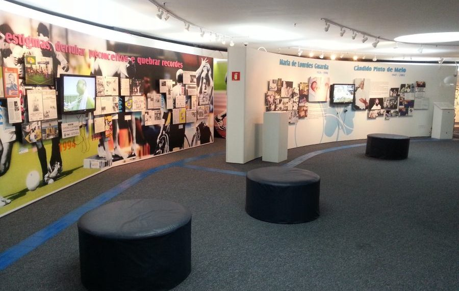

Museu da inclusão
Zona Oeste
O Museu da Inclusão, em São Paulo, é um espaço dedicado a contar e preservar a história
e a luta pelos direitos das pessoas com deficiência no Brasil
ConectaSP
Zona Oeste
O Museu da Inclusão, em São Paulo, é um espaço dedicado a contar e preservar a história
e a luta pelos direitos das pessoas com deficiência no Brasil

Memorial da América Latina - Av. Mário de Andrade, 564 - Portão 10.
Barra Funda - São Paulo
Segunda á Sexta-Feira
10h às 17h
Gratuita
cultura.sedpcd@sp.gov.br